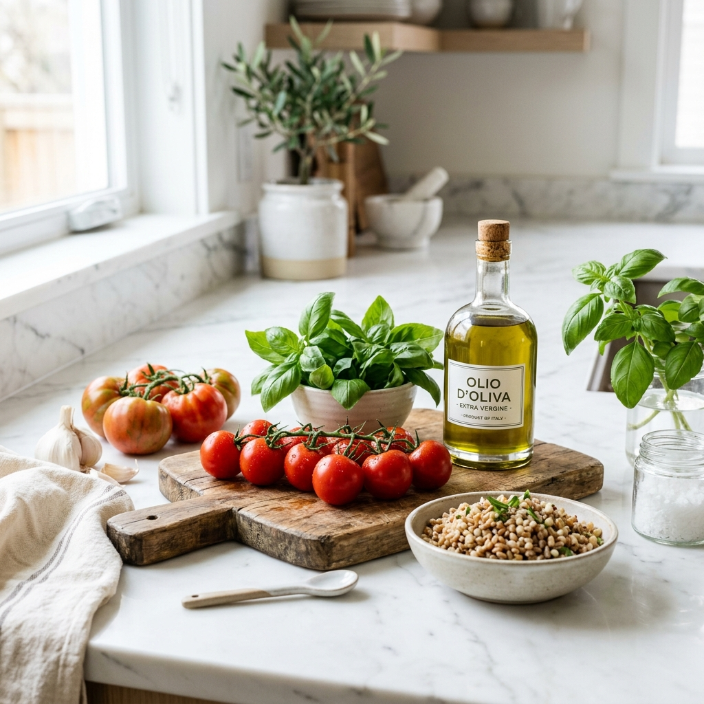

Trova il Tuo Equilibrio: Dott. Emanuele Rubino, Nutrizionista a Modica
La mia missione è guidarti verso una rieducazione alimentare serena e sostenibile nel tempo, abbandonando per sempre l'idea di una dieta rigida e punitiva.
- Piani personalizzati e flessibili: un'alimentazione cucita sulle tue reali esigenze, i tuoi gusti personali e i tuoi ritmi di vita quotidiani.
- Zero divieti assoluti: impariamo insieme a gestire ogni alimento con consapevolezza, ritrovando il piacere di mangiare senza sensi di colpa.
- Supporto costante ed empatico: non sarai mai solo nel tuo percorso, ti accompagnerò passo dopo passo verso il raggiungimento dei tuoi obiettivi di salute.
